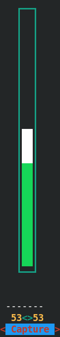

Как с помощью команды amixer выбрать устройство записи звука
Для того, чтобы быстро увидеть краткий список контроллеров звуковой карты, используется команда amixer controls:
> amixer controls
numid=14,iface=CARD,name='Front Headphone Jack'
numid=22,iface=CARD,name='HDMI Jack'
numid=12,iface=CARD,name='Internal Mic Phantom Jack'
numid=13,iface=CARD,name='Mic Jack'
numid=15,iface=CARD,name='Speaker Phantom Jack'
numid=11,iface=MIXER,name='Master Playback Switch'
numid=10,iface=MIXER,name='Master Playback Volume'
numid=2,iface=MIXER,name='Headphone Playback Switch'
numid=1,iface=MIXER,name='Headphone Playback Volume'
numid=24,iface=MIXER,name='PCM Playback Volume'
numid=9,iface=MIXER,name='Mic Boost Volume'
numid=7,iface=MIXER,name='Capture Switch'
numid=6,iface=MIXER,name='Capture Volume'
numid=18,iface=MIXER,name='IEC958 Playback Con Mask'
numid=19,iface=MIXER,name='IEC958 Playback Pro Mask'
numid=20,iface=MIXER,name='IEC958 Playback Default'
numid=21,iface=MIXER,name='IEC958 Playback Switch'
numid=5,iface=MIXER,name='Auto-Mute Mode'
numid=25,iface=MIXER,name='Digital Capture Volume'
numid=8,iface=MIXER,name='Internal Mic Boost Volume'
numid=4,iface=MIXER,name='Speaker Playback Switch'
numid=3,iface=MIXER,name='Speaker Playback Volume'
numid=17,iface=PCM,name='Capture Channel Map'
numid=16,iface=PCM,name='Playback Channel Map'
numid=23,iface=PCM,name='Playback Channel Map',device=3
Это устройства, расположенные на звуковой карточке ноутбука HP 450 ProBook. У этого ноутбука есть встроенный микрофон и гнездо для подключения микрофона. А устройство записи звука только одно. Это значит, что чтобы записывать с конкретного источника звука, надо найти контроллер, который переключает источник для записи.
Обычно такой контроллер, в выхлопе команды, обозначается так:
Simple mixer control 'Input Source',0
или так:
numid=7,iface=MIXER,name='Capture Switch'
Получить больше информации о контроллере можно по его имени, следующей командой:
> amixer cget name='Capture Switch'
numid=7,iface=MIXER,name='Capture Switch'
; type=BOOLEAN,access=rw------,values=2
: values=off,off
Здесь видно, что контроллер имеет булево представление, имеет два значения (для левого и правого канала), и эти значения выставлены как off,off.
Теперь можно переключить контроллер:
amixer cset name='Capture Switch' on,on
И после включения надо снова проверить состояние контроллера предыдущей командой, так как значения могут все равно остаться в положени off,off, если чипсет не поддерживает включение напрямую.
Как с помощью интерфейса alsamixer включить устройство захвата?
То же самое можно сделать в текстовом интерфейсе программы alsamixer. Проблема этой программы в том, что ее интерфейс не совсем понятен. Итак, если контроллер Capture Switch выключен, то на экране это будет выглядеть как строка из нескольких минусов "---------", вот так:

Такой вид показывает, что уровень записи выставлен на середину, но сама запись невозможна, потому что контроллер Capture Switch выключен.
Чтобы включить возможность захвата, надо стрелками выбрать этот столбец, и нажать на пробел (Space). Тогда контроллер Capture Switch включится, и будет выглядеть так:
После такого включения заработает захват звука, например в Audacity. В самом alsamixer желательно сразу выставить столбец Mic Boost